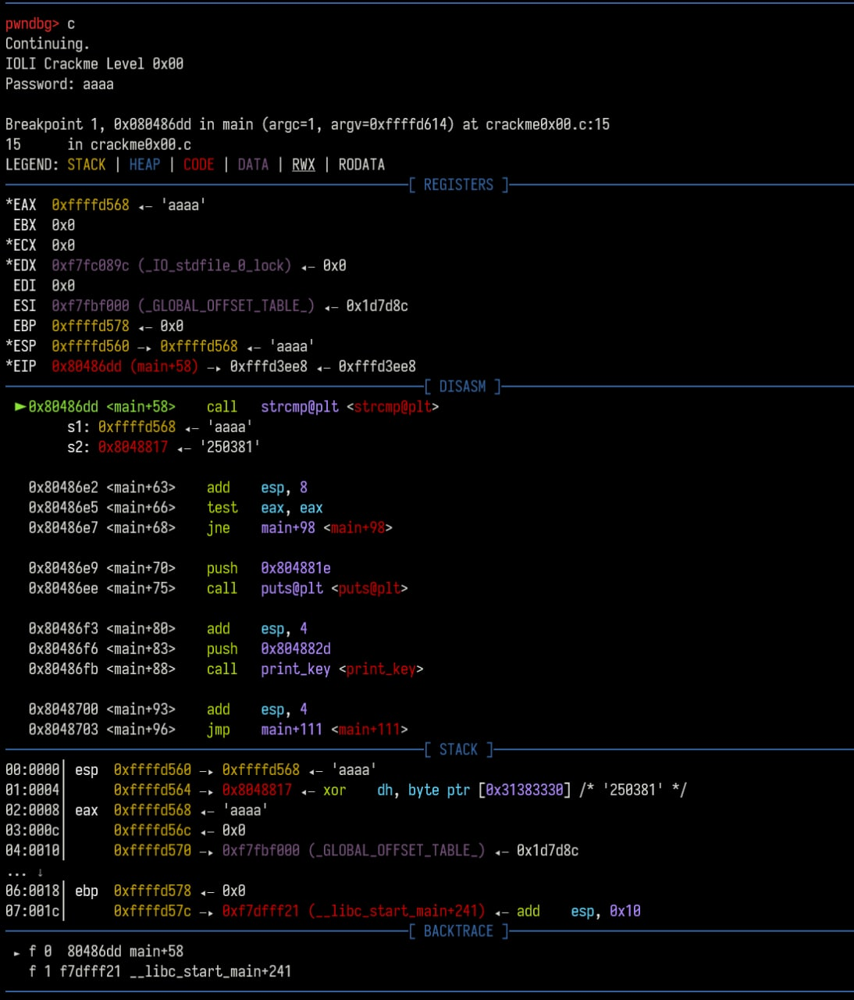
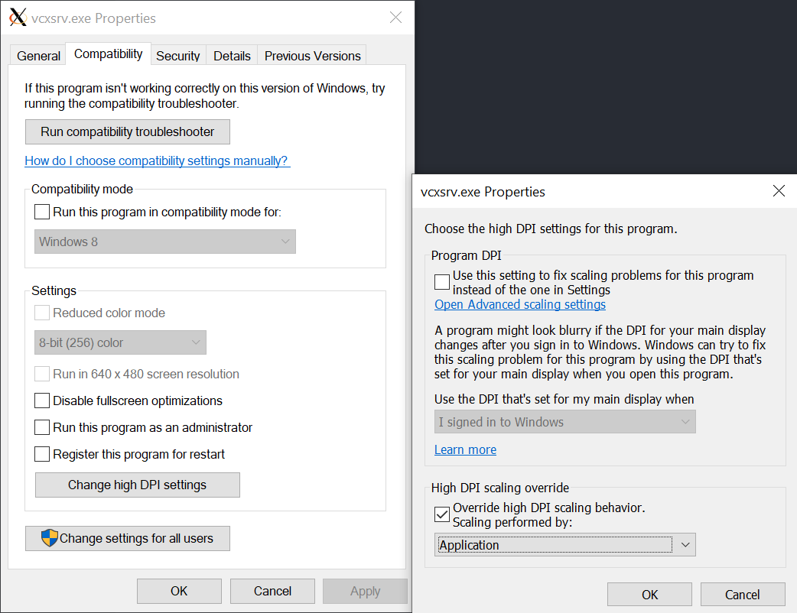

Random Notes
杂七杂八给自己看的笔记
Random Quotes
The word God is for me nothing more than the expression and product of human weaknesses, the Bible a collection of honorable, but still primitive, legends which are nevertheless pretty childish. —— Albert Einstein
“上帝” 这个词对我来说无非就是人类自身弱点的一种表达方式和产物，《圣经》 则是一本光荣的传奇故事的合辑，但依旧非常原始的、同时也是极为幼稚的。 —— 爱因斯坦
我年轻时，比现在还无知，容易正义感爆棚，至少现在慢慢明白，正义应该是块脑子里冷静的坚冰，千万别动不动就脑子发热，那容易进水。 —— 作者李大眼（李承鹏）, 2010 年《中国足球内幕》调查背后的记者
We think sometimes that poverty is only being hungry, naked and homeless. The poverty of being unwanted, unloved and uncared for is the greatest poverty.—— Mother Teresa
我们以为贫穷就是饥饿、衣不蔽体和没有房屋。然而最大的贫穷却是不被需要、没有爱和不被关心。 —— 特蕾莎修女
Lyrics Quotes
Defect / 缺陷
DoubleMirror 双面镜
倾诉是一下笔
就错位的平行线
以极度渴望的语言
描述不能持久拥有的怀念
Hurt
Johnny Cash
Link to song (YouTube Official Music Video)
I hurt myself today
To see if I still feel
I focus on the pain
The only thing that's real
The needle tears a hole
The old familiar sting
Try to kill it all away
But I remember everything
What have I become?
My sweetest friend
Everyone I know goes away
In the end
And you could have it all
My empire of dirt
I will let you down
I will make you hurt
I wear this crown of thorns
Upon my liar's chair
Full of broken thoughts
I cannot repair
Beneath the stains of time
The feelings disappear
You are someone else
I'm still right here
Poetry Excerpts
Had I not seen the Sun
Emily Dickinson
Had I not seen the Sun
I could have borne the shade
But Light a newer Wilderness
My Wilderness has made—
OCD
Neil Hilborn
本诗被用作 Rous - H.E.R 的人声采样
When she said she loved me her mouth was a straight line,
She told me that I was taking up too much of her time
Last week she started sleeping at her mother's place
She told me that she shouldn't have let me get so attached to her;
that this whole thing was a mistake, but...
How can it be a mistake that i don't have to wash my hands after I touched her?
Love is not a mistake, and it's killing me that she can run away from this and I just can't,
I can't — I can't go out and find someone new because I always think of her,
Usually, when I obsess over things, I see germs sneaking into my skin.
I see myself crushed by an endless succession of cars...
And she was the first beautiful thing I ever got stuck on.
I want to wake up every morning, thinking about the way she holds her steering wheel...
How she turns shower knobs like she's opening a safe.
How she blows out candles—
blows out candles—
blows out candles—
blows out candles—
blows out candles—
blows out...
Now, I just think about who else is kissing her,
I can't breathe because he only kisses her once — he doesn't care if it is perfect
I want her back, so bad...
I leave the door unlocked.
I leave the lights on.
Java IO
Java IO Class 整理
| Byte Based Input | Byte Based Output | Character Based Input | Character Based Output | |
|---|---|---|---|---|
| Basic | InputStream | OutputStream | Reader InputStreamReader | Writer OutputStreamWriter |
| Arrays | ByteArrayInputStream | ByteArrayOutputStream | CharArrayReader | CharArrayWriter |
| Files | FileInputStream | |||
| RandomAccessFile | FileOutputStream | |||
| RandomAccessFile | FileReader | FileWriter | ||
| Pipes | PipedInputStream | PipedOutputStream | PipedReader | PipedWriter |
| Buffering | BufferedInputStream | BufferedOutputStream | BufferedReader | BufferedWriter |
| Filtering | FilterInputStream | FilterOutputStream | FilterReader | FilterWriter |
| Parsing | PushbackInputStream | |||
| StreamTokenizer | PushbackReader | |||
| LineNumberReader | ||||
| Strings | StringReader | StringWriter | ||
| Data | DataInputStream | DataOutputStream | ||
| Data - Formatted | PrintStream | PrintWriter | ||
| Objects | ObjectInputStream | ObjectOutputStream | ||
| Utilities | SequenceInputStream |
GDB 逆向调试
启动
可以直接控制台输入 gdb 并在 GDB 中指定程序（例为 crackme）。
$ gdb
+ (gdb)
GNU gdb (Ubuntu 8.1.1-0ubuntu1) 8.1.1
Copyright (C) 2018 Free Software Foundation, Inc.
License GPLv3+: GNU GPL version 3 or later <http://gnu.org/licenses/gpl.html>
This is free software: you are free to change and redistribute it.
There is NO WARRANTY, to the extent permitted by law. Type "show copying"
and "show warranty" for details.
This GDB was configured as "x86_64-linux-gnu".
Type "show configuration" for configuration details.
For bug reporting instructions, please see:
<http://www.gnu.org/software/gdb/bugs/>.
Find the GDB manual and other documentation resources online at:
<http://www.gnu.org/software/gdb/documentation/>.
For help, type "help".
Type "apropos word" to search for commands related to "word".
+ (gdb) file crackme
Reading symbols from crackme...done.
或者也可以直接指定程序（假定 crackme 在当前目录下）。
$ gdb ./crackme
或者也可以把 GDB attach 到正在运行的程式上，这对于某些检查是否处于 debugger 环境中的程式比较有用。以下三种方式都可以实现 attach。
$ gdb -p pid
$ gdb progName pid
$ gdb progName
(gdb) attach pid
运行程序和断点
环境变量
可以使用 show env 查看环境变量讯息。
(gdb) show env
设置环境变量则可以用 set env ENV=value，比如下面添加了一个环境变量 FOO，值为 bar。
(gdb) set env FOO = bar
gdb 内部会默认设置两个环境变量 LINES 和 COLUMNS。众所周知，环境变量是放在栈底（大地址）的，增加环境变量会影响栈帧地址的构成。如果希望能减少这种影响，可以用 unset 删除环境变量。
(gdb) unset env LINES
(gdb) unset env COLUMNS
运行程序
指定程序后并不会直接运行，需要使用 run 或者缩写 r。
(gdb) r
需要传参的话可以在 run 之前 set args
(gdb) set args inputfile.txt
(gdb) r
或者直接 r args
(gdb) r inputfile.txt
运行命令也是可以的啦。
(gdb) r $(echo "hello!")
也可以使用 start 或 starti 来运行程序，本质上是在 main （如果是 C 或者 C++ 程序……有人用 gdb debug 其他语言吗？）处设置一临时断点后执行 run。所有传给 start 的参数都会 verbatim 地转递给 run。
starti 与 start 的区别是如果 main 函数存在 elaboration phase （比如 C++ 里全局变量的建构函数执行），starti 将会在 elaboration phase 的开头打临时断点。
断点
在程序运行前和运行中可以用 break 或 b 指定断点（breakpoint），可以使用函数名，行号（逆向的话通常不知道）和指令地址。
使用函数名断点：
(gdb) b main
使用行号断点：
(gdb) b 9
使用指令地址断点（根据汇编），注意因为是地址所以要用 b *address 格式。
譬如在汇编中注意到有 strcmp 函数调用：
(gdb) disas
Dump of assembler code for function main:
0x080486a3 <+0>: push ebp
...
0x080486d1 <+46>: add esp,0x8
0x080486d4 <+49>: push 0x8048817
0x080486d9 <+54>: lea eax,[ebp-0x10]
0x080486dc <+57>: push eax
+ 0x080486dd <+58>: call 0x8048420 <strcmp@plt>
0x080486e2 <+63>: add esp,0x8
...
则可以在 call strcmp 处断点。
(gdb) b *0x080486dd
Breakpoint 2 at 0x80486dd: file crackme.c, line 15.
或者也可以用相对 main 的偏移（offset）来断点。
(gdb) b *main+58
程序运行到断点时会停止，这时可以查看汇编、寄存器值等操作。
(gdb) r
Starting program: /path/to/crackme
Breakpoint 1, main (argc=1, argv=0xffffd6c4) at crackme.c:9
可以使用 info breakpoint 或者 i b 查看当前所有的断点。删除断点则是用 delete <breakpoint number> 或 d <breakpoint number>。
查看汇编、寄存器值、变量值
汇编
disassemble 或 disas 可以查看 当前 栈帧（frame）的汇编。比如刚才在 main 处打了断点，就能够查看 main 的汇编。
(gdb) disas
Dump of assembler code for function main:
0x08048486 <+0>: push ebp
0x08048487 <+1>: mov ebp,esp
0x08048489 <+3>: sub esp,0x4
...
汇编格式默认是 AT&T, 不想看 AT&T 的阴间汇编的话要提前设置 assembly flavor。
(gdb) set disassembly-flavor intel
带上 /m 参数可以把源码和汇编一起排列（如果有源码的话），没有也能显示一组汇编对应的 c 程序行号，打断点更方便一些。
(gdb) disas /m
Dump of assembler code for function main:
7 in crackme.c
0x08048486 <+0>: push ebp
0x08048487 <+1>: mov ebp,esp
0x08048489 <+3>: sub esp,0x4
...
寄存器
可以使用 info register 或缩写 i r 查看寄存器值。可能是最常用的操作了。
(gdb) i r
eax 0xf7fbcdd8 -134492712
ecx 0xfcf63fa0 -50970720
edx 0xffffd654 -10668
ebx 0x0 0
esp 0xffffd624 0xffffd624
ebp 0xffffd628 0xffffd628
esi 0xf7fbb000 -134500352
edi 0x0 0
eip 0x804848c 0x804848c <main+6>
eflags 0x286 [ PF SF IF ]
cs 0x23 35
ss 0x2b 43
ds 0x2b 43
es 0x2b 43
fs 0x0 0
gs 0x63 99
变量
如果你知道变量名，可以用 print var 或 p var 打印其内容，也可以打印寄存器内容。
比如打印 argv[0] （程序名）
(gdb) p argv[0]
$1 = 0xffffd7f4 "/path/to/crackme"
注意到 print 有一个自增 id，我们可以通过 print $id 来打印之前打印过的值。
(gdb) p $1
$2 = 0xffffd7f4 "/path/to/crackme"
x address 可以用来检视内存内容，比如 x $eax 会把 %eax 中存储的值解读为内存地址，并打印其内容。
p 和 x 可以用基本相同的一套格式化方法来指定要打印变量 / 内存地址被解读为何种类型。
/o：8 进制（octal）/x：16 进制 （hexadecimal）/u：无符号 10 进制（unsigned decimal）/t：binary/f：floating point/a：address —— 这不还是 16 进制吗 =、=/c：char/s：string
x 模式还可以用 /i 采用指令（instruction）格式化方法。在搞 Buffer Overflow 的时候查看写进栈内的 shellcode 异常好用。
(gdb) x/7i 0xfffd6b0
0xffffd6b0 add ecx, esp
0xffffd6b2 push ecx
0xffffd6b3 mov ecx, esp
0xffffd6b5 xor edx, edx
0xffffd6b7 push 0
->0xffffd6b9 sar bl, 1
0xffffd6bb test dword ptr [eax], 0
x 还能指定字符串的字符宽度（譬如 UTF-16le 或 UTF-8 字符宽度就可能为 2 或 3 个字节）。
b: byteh: halfword (16-bit value)w: word (32-bit value)l: giant word (64-bit value)
来看看打印效果：
(gdb) x/bs 0x8048817
0x8048817: "250381"
(gdb) x/ws 0x8048817
0x8048817: U"\x33303532\x50003138\x77737361\x2064726f\x3a204b4f\x616c0029\x3a313062\x6f747574\x6c616972\x766e4900\x64696c61\x73615020\x726f7773Ⅴ\x31b0100䀻܀\xfffbc000烿\xfffc8000铿\xfffcd000峿\xfffda600\xa8ff\xfffe5300죿\xfffed000\xffff3000\x134ff᐀"
(gdb) x/hs 0x8048817
0x8048817: u"㔲㌰ㄸ倀獡睳牯䭏㨠)慬ぢ㨱畴潴楲污䤀癮污摩倠獡睳牯Ⅴ"
(gdb) x/ls 0x8048817
0x8048817: "250381"
其他
如果想边看汇编边调试的话，可以用 layout asm 显示汇编和命令行。
(gdb) layout asm
效果如图：

想要退出 layout 模式只需 Ctrl + X, A （按住 Ctrl + X 后再按 A，类似 VSCode 的 Ctrl + K, * 系列操作）。
layout 除了显示汇编，还可以显示其他内容。具体参数如下：
src: Displays source and command windows.asm: Displays disassembly and command windows.split: Displays source, disassembly and command windows.regs: Displays register window. If existing layout
按步调试
continue 或缩写 c 可以让程序运行到下一个断点。
next 或 n 可以让程序运行到 当前栈帧 的下一条语句。在遇到函数调用时，next 不会跟踪进入函数。
step 或 s 可以让程序运行到下一条语句。在遇到函数调用的时候，step 会跟踪进入函数。
nexti 和 stepi 与不带 i 的指令类似，区别是他们会让程序运行到下一条汇编指令（i 指 instruction）。
Tips
觉得在 GDB 里看汇编太累的话可以 objdump 整个文件，在喜欢的编辑器里带着高亮慢慢看。 Sublime Text 3 推荐 NASM x86 Assembly 这个高亮。
$ objdump -M intel -d crackme > crackme.asm
使用 pwndbg 这个 GDB 插件可以把工作量（指记住 GDB 命令）减少很多。在每次运行到断点时 pwndbg 都会把可能需要的信息漂亮地打出来

Disk Management
Normal Disk Management
List the disk currently have in hand.
$ lsblk -o NAME,SIZE,FSTYPE,TYPE,MOUNTPOINT
NAME SIZE FSTYPE TYPE MOUNTPOINT
sda 256G disk
sdb 256G disk /
Format new disks.
$ mkfs -t ext4 /dev/sba
$ mkfs.ext4
RAID Operations
The best option to make a software RAID array is mdadm. You can get it from apt or other package manager.
$ sudo apt install mdadm
Normal operations
Check RAID configuration
$ sudo mdadm --detail --scan
Check RAID operation progress / whether there is already a RAID array available
$ cat /proc/mdstat
Personalities : [linear] [multipath] [raid0] [raid1] [raid6] [raid5] [raid4] [raid10]
md0 : active raid5 nvme5n1[0] nvme7n1[2] nvme6n1[1] nvme8n1[4] nvme9n1[5]
60011155456 blocks super 1.2 level 5, 512k chunk, algorithm 2 [5/5] [UUUUU]
bitmap: 0/112 pages [0KB], 65536KB chunk
unused devices: <none>
Create and resize a RAID array
Create a RAID5 disk array called /dev/md0 with /dev/sda /dev/sdb and /dev/sdc (might take quite some time)
Note that actually a RAID5 disk array can only be named in the form of /dev/md[0-9]+
$ sudo mdadm --create --verbose /dev/md0 \
--level=5 --raid-devices=3 /dev/sda /dev/sdb /dev/sdc
Grow a RAID5 disk array /dev/md0 with 1 new disk called /dev/sdd (might take quite some time)
$ sudo mdadm --add /dev/md0 /dev/sdd
$ mdadm --grow --raid-devices=5 /dev/md0
Effective Shell
Navigating along the command line
可能应该录制一个 gif 来展示功能。
| 功能 | 快捷键 |
|---|---|
| 定位到行开头 | Ctrl + A 或者 Home |
| 定位到行末尾 | Ctrl + D 或者 End |
| 向前（行首）移动 一个词 | Alt + B 或者 Ctrl + ⬅ |
| 向后（行末）移动 一个词 | Alt + F 或者 Ctrl + ➡ |
删除整行（zsh） | Ctrl + U |
| 删除光标处到行首的 所有字符（非 zsh） | Ctrl + U |
| 删除光标处到行末的 所有字符 | Ctrl + K |
| 删除一个词 | Ctrl + W 或者 Alt + D |
| 上一条命令 | Ctrl + P 或者 ⬆ |
| 下一条命令 | Ctrl + N 或者 ⬇ |
| 打开编辑器编辑当前 指令 | Ctrl + X, E |
Ctrl + X,E 打开的编辑器是通过环境变量 $EDITOR 指定的。
这里有一张非常棒的图可作总结：

修理 hexo-douban
在新博客使用了 hexo-douban 这个库，想展示自己的豆瓣阅读、观影等等。但是生成的豆瓣页在 Fluid 主题下图片显示有点问题，需要手动改 css 来解决；同时装了 bluebird 又检测到几处 TypeError，需要修改 js 源码。
原作者已经没有精力维护这个库了，npm 肯定不会更新，而我又依赖 GitHub Actions 来部署。如何应用自己的手动修改是个问题。
使用 patch-package 给包打补丁
这里推荐个小工具 patch-package。就是给依赖库打个补丁，不影响依赖库正常升级，只是涉及到你修改的内容会用你的补丁替换。
直接在依赖库中编辑修复有 bug 的文件，然后该工具会生成个临时文件夹存放对应版本的依赖库，然后和你修改的依赖库目录去进行比较，生成一个 patch 文件，下次在执行 npm install 时，该工具会将该 patch 合进该依赖库去。
具体操作步骤
-
项目的根目录
package.json下，添加npm postinstall, 以便每次执行npm install时能合进所有的patch文件："scripts": { ... + "postinstall": "patch-package" ... } -
安装
patch-packagenpm i patch-package --save -
编辑依赖库
<package-name>, 并执行下面命令生成 patch 文件npx patch-package <package-name> -
再执行以下命令，你就发现最新安装的包已经合进了你刚刚修改的 patch 文件了
npm install
Reference
在 Windows 10 上装 X
X Window System 简介
TBC

基本配置
Windows 设置：安装 Xserver
其实安装个 Xserver 挺简单的。
Windows 上的 Xserver 有好几个选择，我用的是 VcXsrv。如果你用 choco，还能更方便，可以直接 choco install vcxsrv。 可爱强强又富有的狗哥推荐了微软应用商店的 X410，看起来和 Windows 10 整合得很优秀，不过真的好贵啊……
然后是 HiDPI 设置，一般通过轻薄本现在应该都至少是 2K 或 3K 屏幕了。不设置一下的话字体会糊。
首先找到软件的安装路径，比如 C:\Program Files\VcXsrv，然后对两个可执行文件 vcxsrv.exe 和 xlaunch.exe 执行以下操作：
- 右键点击可执行文件
- 进入
Properties -> Compatibility -> Change high DPI settings -> High DPI scaling override - 选中
Override high DPI scaling behavior - 将 Scaling performed by 选项设为 Application

在开始菜单查找 XLaunch 并运行，一路默认就可以开启 Xserver。如果是 WSL2，记得还要关闭 access control。用命令行的话就是添加 -ac 选项。
WSL 设置
首先设置 DISPLAY 环境变量。 WSL1 可以 export DISPLAY=localhost:0.0 ， WSL2 就要指定 IP 了。 可以这样一劳永逸：
export DISPLAY=$(awk '/nameserver / {print $2; exit}' /etc/resolv.conf 2>/dev/null):0
这里也设置了一下 LIBGL_ALWAYS_INDIRECT，虽然窝目前好像也没什么 3D rendering 需要……
export LIBGL_ALWAYS_INDIRECT=1
然后是 WSL 方面的 HiDPI 显示设置，当然是有多种解决方案的。参考 Arch Linux wiki 有关 HiDPI 的页面 （写得超级棒！），感觉设置 GTK（GDK）的环境变量是最泛用的。
我的方案：
export GDK_SCALE=1
export GDK_DPI_SCALE=1.5
这个数值在小新 Pro 13 的 2K 屏幕上对于大多数应用效果都不错。不过 JB 家的 IntelliJ IDEA 和 CLion 因为是 Swing 应用， UI scale 只支援整数倍，1.5 似乎相当于 scale 到 2 了，导致字都看起来非常大……不过可以通过调整字体大小解决。
这个表格大致整理了应该修改哪些地方（基于 CLion 2020 的菜单层级）：
| 设置项 | 作用 |
|---|---|
Appearance & Behavior > Appearance > Use Custom Font | 设置绝大多数 UI 字体 |
Editor > Font 或 Editor > Color Scheme > Color Scheme Font | 设置编辑器（写代码的区域）的字体 |
Editor > Color Scheme > Console Font | 设置内建终端（Integrated Terminal）的字体 |
大功告成！
设置好 DISPLAY 和 HiDPI 支援并开启 Xserver 之后就能运行 GUI 应用了。
可以拿 xeyes 测试一下：
sudo apt install x11-apps
xeyes
不出意外你就能看到熟悉的弱智小眼球了。
也能正常使用安装在 WSL 的 Sublime Text、CLion、IntelliJ IDEA 等等。
JetBrains IDE 的进一步调整
装了 JB 家的几个 IDE 之后发现没法即开即用，还要再配置点东西。
Use Windows default browser
WSL 没有默认浏览器（当然），而 JB 家 IDE 的 markdown 渲染器依赖 JCEF，所以必须得有个浏览器。我们可以用 Windows 的浏览器：
打开 Settings > Tools > Web Browsers，将 Default Browser 的路径改为 /mnt/c/path/to/your/browser/browser.exe 即可。
Resolve JCEF dependency issue
JCEF 依赖的 libcef.so 和 libjcef.so 两个库都有一大堆依赖。根据 event log 的报错安装一下就好了。我缺 libXss 和 libgbm：
$ sudo apt install libxss1 libgbm1
CJK 字体支援
当然可以手动安装字体，不过也可以在 /usr/share/fonts/ 创建连到 Windows 字体库的软链接：
sudo ln -s /mnt/c/Windows/Fonts/ /usr/share/fonts/WindowsFonts
然后 logout 再登入，或用 fc-cache 手动 index 字体库，即可愉快阅览中日韩内容。
fc-cache -f -v
使用中文输入法
应该可以装 fcitx 或者 ibus 来使用中文输入法。不过目前没有输入中文需求。暂时搁置。
更好的方法是寻求一个办法打通两边使用 Microsoft IME，暂时没有实现想法……
Reference
tmux usage 101
Motivation: why you should use tmux?
tmux is very useful under the following scenarios:
- When you
sshto a server, you would like to open multiple shells but don't want tosshfor multiple times. - When you want to leave your work on the server running without needing to keep your shell alive, and moreover, you want to resume working on it afterwards
And it's just cool when you can split the shells windows!
Basic Usage
All the commands for tmux are only available after you type the command prefix. By default it is Ctrl-b. After pressing this combination, it will activate the console mode (or so I believe).
Pane commands
| Command | Description |
|---|---|
" | Split current pane vertically, create new pane underneath |
% | Split current pane horizontally, create new pane on the right |
x | Close current pane (with confirmation, contrasst to simply pressing Ctrl-d) |
z | Maximize current pane (after v1.8) |
! | Move current pane to a new window and open it there |
; | Switch to the latest used pane |
q | Show pane number, and before the numbers disappear, you can switch to that pane by typing the number |
{ | Swap forward current pane |
} | Swap backward current pane |
Ctrl+o | Swap all the panes in current window clockwise |
arrow | Move to the pane pointed by the arrow key (intuitive!) |
o | Switch to the next (pane number order) pane |
t | Show a clock :) |
Configure
Change command prefix
The default command prefix Ctrl-b is not a very good key binding: they are too far away! My choice is to change it to Ctrl-a, but it could be set to any keybinding you like.
We should use Ctrl-b and then type : to enter the command line mod and enter the following lines
set -g prefix C-a
unbind C-b
bind C-a send-prefix
If you would like to set it permanently, it is wise to create a ~/.tmux.conf, it functions just like your .bashrc and other dotfiles. If you
Since tmux 1.6, it is possible to set a second prefix by the following command:
set -g prefix2 <your-key-binding>
GPG
List keys
$ gpg --list-secret-keys --key-id-format LONG
path/to/gnupg/pubring.kbx
------------------------------------------------
sec rsa4096/20732A67E8F95BD9 2020-12-02 [SC]
4BAE029D16C806BB4FCB925F20732A67E8F95BD9
uid Mischa "Matchy" Volynskaya
ssb rsa4096/DABE372E78DCA377 2020-12-02 [E]
Export keys
$ gpg --export-secret-keys -a --output secretkey
Import keys (from the secretkey generated)
gpg --import secretkey
侧卫学101
看完这一篇你也能成为侧卫大师。
分类特征整理
基本类型侧卫 —— 俄系侧卫
| 座位 | 座舱分界 | 垂尾 | 起落架 | 空中加油 | IRST | 空速管 | 气动布局 | 其他 | 备注 | |
|---|---|---|---|---|---|---|---|---|---|---|
| Su-27 | 单座 | 座舱机身明显分界 | 垂尾切尖 | 前轮单轮 | 无空中加油接口 | 居中 | 有机首空速管 | 普通翼身融合，无鸭翼 | 座舱后有突起天线 | |
| Su-27UB | 双座 | 座舱机身平滑过渡 | 垂尾切尖 | 前轮单轮 | 无空中加油接口 | 居中 | 有机首空速管 | 普通翼身融合，无鸭翼 | 座舱后有突起天线 | 教练机 |
| Su-30 | 双座 | 座舱机身平滑过渡 | 垂尾平行 | 前轮双轮 | 有空中加油接口 | 侧偏 | 有机首空速管 | 普通翼身融合，无鸭翼 | Su-30MKK、Su-30MK2 也是这个基本构型 | |
| Su-30SM | 双座 | 座舱机身平滑过渡 | 垂尾切尖 | 前轮双轮 | 有空中加油接口 | 侧偏 | 有机首空速管 | 有鸭翼 | 出口印度、马来西亚和阿尔及利亚的 Su-30MKI/M/A 也是这个基本构型 | |
| Su-33 | 单座 | 座舱机身明显分界 | 垂尾介于切尖 | 前轮双轮 | 有空中加油接口 | 侧偏 | 没有机首空速管 | 普通翼身融合，无鸭翼 | 雷达罩后方有 4 个小型 L 型空速管 | 早期验证机其实有鸭翼 |
| Su-35 | 单座 | 座舱机身明显分界 | 垂尾切尖 | 前轮双轮 | 有空中加油接口 | 侧偏 | 没有机首空速管 | 普通翼身融合，无鸭翼 | 雷达罩后方有 4 个小型 L 型空速管 | 早期验证机其实有鸭翼 |
解放军版侧卫
首先，J-11 完全等同于 Su-27，J-15 模仿的是 Su-33，J-16 模仿的是 Su-30，所以可以按照判断 Su-27、Su-30、Su-33 的方法大致把看到的 PLA 飞机归类。但进一步判断改型则需要结合涂装、雷达罩、翼尖挂架等等来具体判断。
PLAAF 也买了一些俄方交付的 Su-27、Su-30 和 Su-35，和歼系（即使是组装的 J-11A）的最大区别就是没有编队灯。在此一并列出。
PLA 的海军飞机都是偏白的，空海军共有的飞机的海军机种后面会带 H（如 J-11BH），在此不做区分。（P.S. H for Haijun，哈哈哈哈）
| 基本型 | 座位 | 雷达罩 | 备注 | |
|---|---|---|---|---|
| Su-27SK | Su-27 | 雷达罩有缺口且有编号 | 没有编队灯 | |
| Su-27UBK | Su-27UB | 雷达罩有缺口且有编号 | 没有编队灯 教练机，双座的 | |
| J-11A | Su-27 | 雷达罩有缺口 | ||
| J-11B | Su-27 | 黑色雷达罩 | ||
| J-11BS | Su-27 | 黑色雷达罩 | 教练机，双座的 | |
| J-15 | Su-33 | 灰色雷达罩 | ||
| J-16 | Su-30 | 灰色雷达罩 |
其他稀有侧卫
WIP
基本型侧卫特征查表
| 单座 | 双座 | 座舱机身明显分界 | 座舱机身平滑过渡 | 垂尾不切尖 | 垂尾切尖 | 单前轮 | 双前轮 | IRST居中 | IRST偏左 | 有空中加油接口 | 无空中加油接口 | 无鸭翼 | 有鸭翼 | |
| Su-27 | ||||||||||||||
| Su-27UB | ||||||||||||||
| Su-30MK | ||||||||||||||
| Su-30SM | ||||||||||||||
| Su-33 | ||||||||||||||
| Su-35 |
名词解释
IRST：全称 Infra-Red Search and Track，红外跟踪与搜索技术。能够探测目标和空中背景的温差进行红外成像，和被动雷达类似，所以也被称为红外雷达。